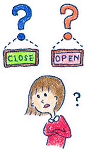

18 : 傾聴トレーニング入門 会話がはずむ質問の仕方
・傾聴トレーニング入門 会話がはずむ質問の仕方

前回までに傾聴の基礎として、基本のオウム返し、言い換えのオウム返し、肯定返し、人間性肯定、自己開示
の５つのスキルを勉強してきました。
実際にできるようになるまでは何度も練習する必要がありますが、是非日常生活でもチャレンジしてみてください。
今回は勉強するのは質問の仕方です。
まず質問の練習をする前にちょっと注意事項があります。雑談をする上ではあまり使わないことをオススメします。
と言うものも質問は乱発しすぎると尋問になってしまいますし、相手に話してもらおうとしすぎるあまり、受身のコミュニケーションになってしまうからです。
巷ではたまに「9割聞く」と言うような本が売られていますが、会話で9割聴く癖をつけてしまうと、話す力がなかなかつきません。
そうなった場合、主体的に会話をする機会（プレゼンやスピーチ、雑談で自分が話し手）になったときに本当に困ることになってしまいます。 質問については、ある意味で相手に発言の機会を預けてしまうので少し注意が必要なのですね。
さてさてそういったデメリット理解してもらった上なら私も質問について安心して講義を進められます。 前に進んでいきましょう。
・５W質問法は会話の基礎
雑談において質問をするうえではまずは５W１H質問について練習をする必要があります。
５W質問とは、
・時間
・場所
・人
・きっかけ
・特徴
について聞く質問です。
例えば、会話の相手が 「私は鳥取出身です」 と発言したとします。これに対して５通りの質問を作ると、
・時間
→いつぐらいにこちらにきたのですか？
・場所
→鳥取のどのあたりに住んでいたのですか？
・人
→鳥取はどんな方が多いですか？
・きっかけ
→上京したきっかけはなんですか？
・特徴
→鳥取行ったことないのですが、有名なところですとどんな所がありますか？
こんな形で質問を作ることになります。 ちょっと難しいのが「特徴」ですね。 特徴は「その他」のようなイメージで大丈夫です。 その質問を具体的にごり下げていくような質問であればOKです。
５ｗ質問は会話の前半に出てきやすい質問で ボクシングで言うと「ジャブ」のような位置づけになります。 無難ですし、会話が続きやすくなります。 目安は１〜２分間に一度程度使うといいでしょう。 それ以上連発すると、尋問になってしまうので注意が必要です。
・練習問題１
それでは練習問題を解いてみましょう！
「私はスターバックスによくいきます」
この発言に対して５通りの質問を作ってみましょう。
↓
↓
↓
↓
↓
↓
作成してみましたか？
それでは回答例を見てみましょう！
・解答例
時間
→月に何回ぐらい、行きますか？一度お店に入るとどれぐらいゆっくりしますか？
場所
→どの辺のスタバに行きますか？
人
→スタバってどんな人が多いですか？店員さんに顔を覚えられたりしますか？
きっかけ
→どんな時にスタバに行きたくなりますか？スタバにいくようになったきっかけはありますか？
特徴
→スタバってどんなお店ですか？スタバの雰囲気はどんな感じですか？
・練習問題２
余裕があるかたは以下の３つの問題にもチャレンジしてみましょう！ 回答が気になったら講座で講師に質問してみてくださいね♪
「来年からトイックの試験を受けるつもりです」
「仕事はIT系で、銀行のシステムを作っています」
「先日、美味しい、イタリアンを見つけました」
・質問の使い方
繰り返しになりますが、５ｗ質問は会話の土台となる質問です。 相手が話さないタイプの時や、会話の冒頭は使うことが多いです。 ただ、連発は絶対NGです。必ずオウム返しや、自己開示、肯定返しを挟みながら質問していきましょう。
さらに言えば実は、５ｗ質問は土台となる質問であって、メインとなる質問ではありません。５ｗ質問は会話自体は続くのですが、実はもっと大事な質問の仕方があるのです。それは「感情質問」という質問になります。
感情質問はコミュニケーション講座でしっかり練習していきます♪講座にご参加される方は楽しみにしていてくださいね。
・傾聴のまとめ
さてさてここまで傾聴の基本的なスキルについて学習してきました。傾聴のスキルはまだ半分ぐらいしか、お伝えしていないのですが、そろそろ飽きてくる？ころだと思うのでここで一区切りとしましょう。
講座ではもう少し発展的なスキルを学び、実際に練習を繰り返しながら進めていきます。ひとまずは傾聴の基礎としてはいままで挙げたスキルを学習しておいてください。
講座と違って、皆さんの実践的な練習をみることができないのが残念ですが、是非次のコラムも読んでみてくださいね！
次回からは傾聴の反対で「発話」の練習をしていきます。ここまでしっかりと予習された方は疲れた部分もあるでしょう。今日は休憩して明日また進めてみてくださいねっ！
 |
|